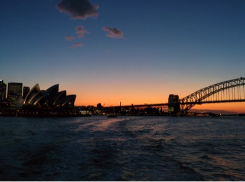
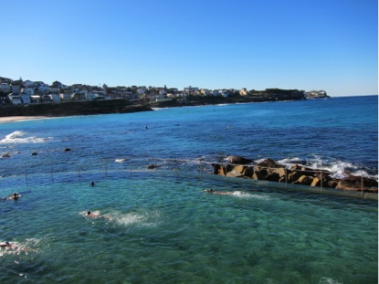

|
HOME COMMITTEES PLENARY SPEAKERS TUTORIAL LECTURERS CALL FOR SUBMISSIONS ACCEPTED TALKS ACCEPTED POSTERS SCIENTIFIC PROGRAM RUMP SESSION PHOTO GALLERY REGISTRATION PARTICIPANTS CONFERENCE VENUES ACCOMMODATION TRAVEL AND VISA LOCAL INFORMATION TRAVEL SUPPORT LIST OF QIP CONFERENCES QIP CHARTER CONTACT US QIP SURVEY |
Local InformationVenue This year QIP is being hosted at the University of Technology, Sydney (UTS) Located in central Sydney, UTS, is ideal for easily accessing the best restaurants, cafes, bars, and tourist destinations that Sydney has to offer. Within a 30 minute walk of UTS are many of the best-known eating, drinking and, cultural hubs of Sydney. The suburbs of Newtown, Surry Hills, China Town, Glebe, and Ultimo all have multiple restaurants, cafes, bars, and pubs that will cater to almost any taste! FoodWhere to begin? Sydney is famous for it’s wide variety of high quality food! With the QIP venue being so close to the city centre there are many, many food options nearby. There are a few general tips for eating out during QIP:A sit-down breakfast/lunch in a good café, pub, or restaurant will roughly cost between $10-$20. The cost is closer, or below, $10 if you go to Newtown for Thai food (for example) or aim for something more like a takeout or fast food. Coffee is generally very good in cafes. A flat white/cappuccino/latte will cost around $3.50-$4 in most cafes. Most cafes do food, at the very least sandwiches. Most cafes do food, at the very least sandwiches. Most pubs in Surry Hills/Newtown/Chippendale do food, and often have a good variety of food options for lunch and dinner. There are normally also at least a couple of decent options for vegetarians. Dinner is generally more expensive than lunch, a main meal in a pub will normally be between $15-25 – though many pubs have nightly dinner specials, which will normally have you paying something in the range of $10-15. In the above map we have highlighted a few food and drink options that the organisers are familiar with. It is by no means an exhaustive list! The streets and areas marked in red have a higher density of food and drink options. Some more detailed recommendations can be found below. If you go online you will see a more detailed version of the above map with quite a few more options.
Areas with lots of food options (marked in red on the above map)
Cafes/restaurants close to UTS
Pubs close to UTS
Tourism Sydney is a major tourist destination - especially in summer! We definitely recommend that you spend some time during QIP exploring our city! While there are far too many things to be seen in and around Sydney in one week, we’ve included a few highlights that would be easy to do during QIP. Sydney Harbour/downtown Sydney:The Sydney Opera House, the Harbour Bridge and the Botanical Gardens are a 30 minute walk, or 5 minute train ride from the main QIP venue. All of these locations are a short walk from “Circular Quay” train station – trains depart from Central to Circular Quay every few minutes. Sydney Festival:The Sydney Festival is a month-long cultural festival with free and non-free events held all over Sydney. Check out their website for more information – but there are always many interesting performances, exhibits, and events! Beaches:There are many beautiful beaches that are close to the inner city. The easiest beaches to access from Central are Bondi, Bronte, Coogee, and Maroubra. Each of these has their own unique charms, though Bondi Beach is by far the most popular and as such has many cafes, restaurants, and pubs that can be found within a short walk from the beach. Trains to Bondi Junction leave Central every 10 minutes, and buses travelling from Bondi Junction to the beach leave every few minutes (the 333, 380 and 381 lines). You can buy a train ticket to Bondi Beach which allows a transfer from train to bus and Bondi Junction. Importantly, if you do go for a swim at a beach please swim in patrolled areas between the red and yellow flags! Take a ferry to Manly:The ferry ride from across the harbour from Circular Quay to Manly is very beautiful! A number of Sydney’s iconic landmarks are best seen via one of the harbour – including the Opera House and Sydney Harbour Bridge. Once you arrive at Manly Wharf, it is a 5 minute walk through the pedestrian mall to the surf beach. Like Bondi, Manly has many cafes, restaurants, and bars. There are also a number of impressive walking trails around the Manly area. Walk from Bondi Beach to Coogee beach: The Bondi to Coogee walk is a cliff top coastal walk from Bondi Beach to Coogee Beach. It is about 6 km long and takes around 2 hours to complete. Along the way you pass a number of beaches, parks, cliffs and bays. You can stop half-way for food at the cafes just off Bronte Beach, or alternately stop at the pub at Clovelly point. Once you get to Coogee you might like to stop for food or drinks at one of a number of cafes or restaurants (or pubs). Buses travel between Coogee Beach and the city very frequently. Weather QIP will be held in the middle of summer – it is strongly recommended that you pack with this in mind! While the average maximum temperature in January is a pleasant 25 C (78 F), the temperature can sometimes be considerably warmer (up to around 40 C, 104 F). We also strongly recommend that you wear a hat, sunglasses and use a high SPF sunscreen if you intend to spend any time outdoors. The UV index throughout summer is frequently in the very high/extreme range and, which means that sunburn occurs very quickly! TransportSydney has an extensive public transport network, with trains, buses, and ferries, frequently connecting the inner city to many of Sydney’s main tourism destinations. UTS is a very short walk from Sydney’s “Central” train station, which is the main public transport hub for the city. All the hotels listed on Accommodation page are a short walk from both UTS and Central Station. All of Sydney’s train lines can be accessed from Central and many bus lines also have stops in the streets surrounding Central. Ferries around the harbour can be caught from Circular Quay, a 30 minute walk from UTS or a 5 minute train journey from Central. An online journey planner can be found here, or here. If you are using a mobile phone, Google maps as well as the TripGo and Arrivo apps are quite reliable. Airport:Sydney Airport has three terminals, one international terminal and two domestic terminals. All terminals are connected to Sydney’s public transport network by the Airport Link train. The Airport Link leaves approximately every 10 minutes and takes 13 minutes to get to Central station. It is by far the fastest method for reaching Central station/UTS (a taxi takes about 25 minutes). The train ticket from the Airport to Central costs $16.40. Ticketing:It is recommended that you either buy an Opal card if you intend to frequently take public transport in Sydney during QIP.They can be purchased and topped up at many retailers around Central station and throughout the inner city (there is a complete list on the Opal website). They are “charged” per-trip, with varying prices depending on the distance and type of transport (up to 8 trips per week). While single-trip tickets for ferries and trains can be purchased from ferry terminals and train stations, they can be rarely bought on buses that travel through central Sydney. If you do not wish to buy an Opal card, single-trip bus tickets and a number of weekly paper tickets can be bought from a range of retailers and train stations. Hailing buses:Note that buses must be “hailed” (by putting out your arm) at bus stops otherwise they will not stop. They will also not stop if they are full (which happens a lot if you are taking the bus anywhere near Bondi Beach in summer). Taxis:Taxis can be hailed or caught from taxi ranks that are found throughout the city and major entertainment, dining, or tourism areas. Taxis in Sydney are typically quite expensive. Also, it can take a deceptively long time to travel by, especially in the older regions of the city. Taxis will also charge additional fees for using credit cards and for using toll roads. Alternate services, such as UberX, are gaining in popularity and are often more reliable and cheaper then the usual licensed taxi services. TippingThere is no obligation to tip in Australia. People do occasionally leave a tip, but only for exceptional service. Mobile phones and wifi
Having access to mobile data is very useful for getting around Sydney. Much of Sydney’s transport timetabling assumes that people will be using transport/mapping apps. Sim cards can be purchased at the airport and in many convenience stores and mobile phone shops near UTS. Expect to pay roughly $20-30 for a reasonable amount of data/phone calls.
Wifi will be provided at the Aerial Function Centre, the details for which will be given at the conference. Also note that eduroam networks are available throughout the UTS and University of Sydney campuses.
In case of emergencies dial 000 to be connected to the police, ambulance, and fire services. On the UTS campus you can dial 6 on any landline phone to be connected to security.
|